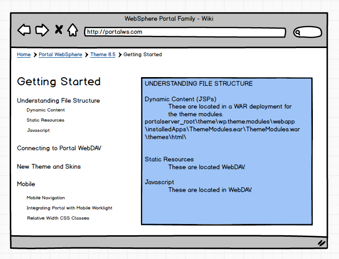

My name is Cindy, and I enjoy crafting/interfacing meangingful and expressive interactions between people and technology.
As an interdisciplinary design and computer science major, I am interested in a Full-Time position in user experience design and front-end development that enhances and enriches a user's experience through meaningful and intuitive interactions. My internship experience includes problem solving and project delivery in enterprise level companies.

As an interdisciplinary design and computer science major, I am interested in a Full-Time position in user experience design and front-end development that enhances and enriches a user's experience through meaningful and intuitive interactions. My internship experience includes problem solving and project delivery in enterprise level companies.
This site is very much so a work in progress. Feel free to look at my resume or reach out to me for more information.

Projects
IBM
I currently work in WebSphere Portal, an enterprise-level product that gives users a single point of access to navigate to other applications, information, services, and social point of connections. WebSphere Portal allows a company to deliver a tailored and responsive experience for their customers, with over five thousand clients big and small.
My first project invovled revamping the Portal Wiki site within the Portal Wiki framework that contained a quick reference, quick start, and several modules containing links (snapshot here). My objective was to create a new page for the recently released Portal 8.5 that looks visually more modern, create a very obvious emphasis on the Quick Start, and organize the modules in a way that would be cleaner and faster to peruse through.

Wireframes
After a couple of sticky notes on necessary parts of the old website, I sketched a few designs on paper and created a couple quick mockups in Balsamiq.
Mockups
Based off of the wireframe that I liked the most, I created two slightly more fleshed out mockups. My thoughts were to keep as much as the original as possible, as well as modernizing the old site.

Color Palette & Brand Identity
I didn't think my previous design really reflected the visually appealing part of the objective, nor did it really promote IBM as a brand, so I came up with a color palette inspired by IBM Watson's color designations.
Quick Start - Iterative Design
One of my main objectives was to somehow highlight the Quick Start section and really have the users go over each step. After a few iterations, the team ended up liking the last option because the arrows direct the eyes, and a description is show in the box below as the user hovers over any part of each block. Currently the site has responsive squares using media query, and the Javascript is simple - changing text by getting the element's ID and wiping it if the user is not hovering over a box.
View a demo of the arrowed blocks here.
View a demo of the arrowed blocks here.
(Almost) Final Visual of Design + Annotations
The long picture here is nearly the final copy of the design, along with a picture underneath that shows a small section of my annotations detailing the user experience.
Icons
My team remarked that it'd be nice to have tailored icons, so I knocked them out in about two days. This was a deliverable that showed top picks for icons, the rationale behind them, and the three spare icons that were deemed not the best possible fit.
Implementation, Testing, and Currently Delivering
After implementing the design, I tested for responsiveness by using User Agent Switcher on various devices and resolutions, and ran several machines with various releases of Safari/IE8+/Chrome/Firefox. For accessibility, I checked against Section 508's compliance checklist and this Color Analyzer.
Currently, I am in the process of delivering a search bar for the Wiki and on a separate project, integrating HTML5/Angular/Bootstrap samples within Portal for client demo at IBM conferences. View a small snippet of the search algorithm here.
Currently, I am in the process of delivering a search bar for the Wiki and on a separate project, integrating HTML5/Angular/Bootstrap samples within Portal for client demo at IBM conferences. View a small snippet of the search algorithm here.